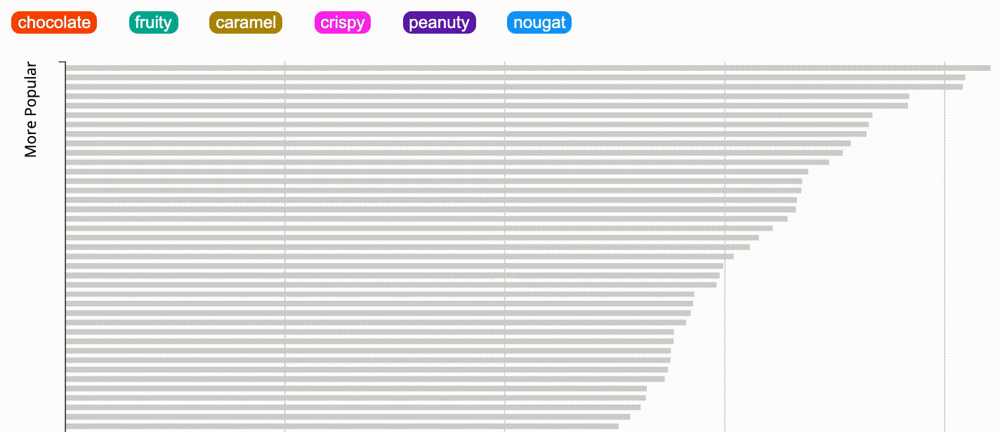
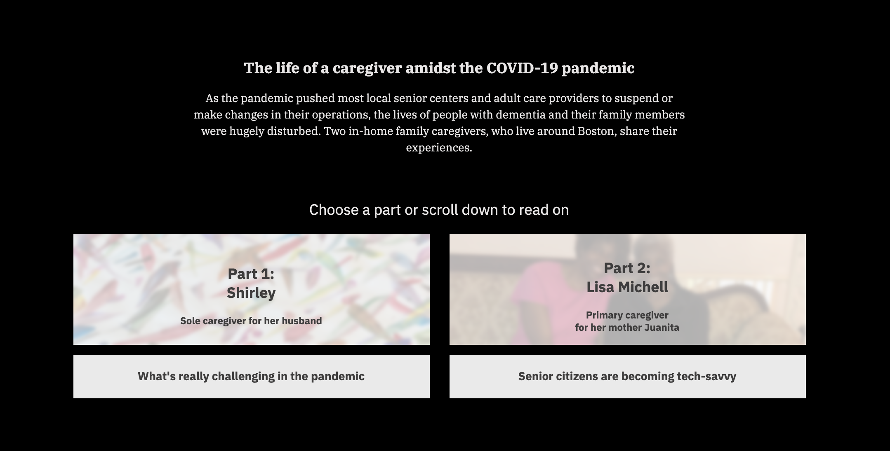

Hi, I'm Yuriko.
I'm a journalism graduate student based in Boston, MA. I'm from Osaka Japan, and I previously worked for a Japanese national newspaper as a staff writer. Now, I'm focusing on interactive data visualization for the web.
I'm a journalism graduate student based in Boston, MA. I'm from Osaka Japan, and I previously worked for a Japanese national newspaper as a staff writer. Now, I'm focusing on interactive data visualization for the web.

I analyzed Japanese Sumo wrestling's tournament ranking table to see what kind of wrestlers are at the top of the rankings. I first analyzed the data with R, and created an interactive scatter plot with D3 JavaScript.

I analyzed the data about popularities of major Halloween Candies. I first analyzed and visualized the data with R, and later updated the project during the winter break, making it interactive with D3 JavaScript as well as implementing scrollytelling feature, using a JavaScript library enter-view.js.

This is a multimedia project that aimed to unpack lives of people with dementia and their family caregivers during the coronavirus pandemic. I interviewed two in-home caregivers around the Boston area. Their stories are told via text, pictures, audio files, and videos.
I interviewed Checo Yancy, a formerly incarcerated person who spent 20 years in prison and regained his voting rights last year after 37 years. He is now a director of Voice of the Experienced (VOTE), a grassroots organization that advocates for the rights of formerly incarcerated people. I composed the audio interview story where he shares what it means to have voting rights back.

At The Asahi Shimbun, a Japanese national newspaper, my team and I broke the first arrest of a for-profit child adoption case in Japan. I was able to have a one-on-one interview with the suspect before the arrest, adding a deeper insight to the story with an exclusive Q&A. This story received the paper’s nationwide award for Leading Local News Director.

At The Asahi Shimbun, a Japanese national newspaper, I covered a murder case where an elderly man had strangled his wife who had been suffering from dementia. After half a year of investigating the murder, I was able to release a comprehensive story which gained a lot of attention from the Japanese public and heightened awareness around the challenges families face when dealing with dementia. This story achieved the third best reader conversion rate in Chiba prefecture.